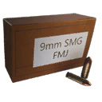
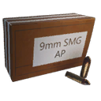
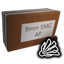
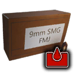

Damage by ammo and quality
The first table lists each ammo type the weapon can load. Damage is one projectile at the base value (Special quality), Armour and Comp. multiply it when the projectile hits an armour plate or a component, and Falloff is how the damage drops over distance. The second table works out one whole shot (damage × pellets × the quality multiplier) for every quality, at close range and before the difficulty setting.
| Ammo | Damage | Pellets | Armour | Comp. | Falloff / range |
|---|---|---|---|---|---|
 9mm FMJ Ammo (SMG) | 24 | 1 | ×1 | ×1 | drops to 60% by ~500 m max 1,000 m |
 9mm Armor-Piercing Ammo (SMG) | 24 | 1 | ×1.25 | ×0.75 | drops to 60% by ~500 m max 1,000 m |
| Ammo |  Q1 Q1 |  Q2 Q2 |  Q3 Q3 |  Q4 Q4 |  Q5 Q5 | Q5 vs armour | Q5 vs components |
|---|---|---|---|---|---|---|---|
| 9mm FMJ Ammo (SMG) | 12 | 14.9 | 18 | 21.1 | 24 | 24 | 24 |
| 9mm Armor-Piercing Ammo (SMG) | 12 | 14.9 | 18 | 21.1 | 24 | 30 | 18 |
| Quality | Q1 | Q2 | Q3 | Q4 | Q5 |
|---|---|---|---|---|---|
| Damage multiplier | ×0.5 | ×0.62 | ×0.75 | ×0.88 | ×1 |
- A Dilapidated copy does 50% of the damage of a Special one (×0.5 against ×1), so upgrading quality is a straight damage increase.
- Against armour plates, 9mm Armor-Piercing Ammo (SMG) is best (×1.25 damage to armour).
Experimental ammo of this calibre
The game files flag these rounds as experimental-only, and this weapon has no experimental version. They are listed because they share its calibre; the damage column uses the Special multiplier for comparison.
| Ammo | Damage | Pellets | Armour | Comp. | Falloff / range | Effects |
|---|---|---|---|---|---|---|
 9mm SMG Explosive Ammo Exp. only | 24 | 1 | ×1 | ×1 | drops to 60% by ~500 m max 1,000 m | Special effect not included (it lives in a separate effect file). |
 9mm SMG Corrosive Ammo Exp. only | 24 | 1 | ×1.5 | ×0.5 | drops to 60% by ~500 m max 1,000 m | Over time: 6 every 4 s for 2 s to players and people |
| Ammo | Q5 | Q5 vs armour | Q5 vs components |
|---|---|---|---|
| 9mm SMG Explosive Ammo Exp. only | 24 | 24 | 24 |
| 9mm SMG Corrosive Ammo Exp. only | 24 | 36 | 12 |
Augments24 of 28 fit
Augments go into slots that depend on quality. Following the in-game rules: Worn and Good weapons take one Primary augment, Exceptional and Special take a Primary and a Support augment, and Dilapidated and experimental weapons take none. A ✓ means the augment fits this weapon at that quality, as the game's equipment compatibility table says.
Primary augments
| Augment | Q2 | Q3 | Q4 | Q5 | Restriction | |
|---|---|---|---|---|---|---|
 | Acidic | ✓ | ✓ | ✓ | ✓ | – |
 | Adhesive Rounds | ✓ | ✓ | ✓ | ✓ | – |
 | EMP Detonation | ✓ | ✓ | ✓ | ✓ | – |
 | Health Stealing | ✓ | ✓ | ✓ | ✓ | – |
 | Machine Disarmer | ✓ | ✓ | ✓ | ✓ | – |
 | Prone Specialization | ✓ | ✓ | ✓ | ✓ | Melee weapons cannot use this augmentation. |
 | Rapid Reload | ✓ | ✓ | ✓ | ✓ | Melee weapons cannot use this augmentation. |
 | Scorching | ✓ | ✓ | ✓ | ✓ | Explosive weapons cannot use this augmentation. |
 | Sharpshooter | ✓ | ✓ | ✓ | ✓ | Melee weapons and explosive weapons cannot use this augmentation. |
 | Small Fryer | ✓ | ✓ | ✓ | ✓ | – |
 | Structure Destructor | ✓ | ✓ | ✓ | ✓ | – |
 | Titan Toppler | ✓ | ✓ | ✓ | ✓ | – |
 | Unstoppable Shells | ✓ | ✓ | ✓ | ✓ | Melee weapons and explosive weapons cannot use this augmentation. |
 | Uranium Infused | ✓ | ✓ | ✓ | ✓ | – |
Don't fit: Final Round (Only handguns can use this augmentation.); Trick Shot Master (Only shotguns and melee weapons can use this augmentation.)
Support augments
| Augment | Q4 | Q5 | Restriction | |
|---|---|---|---|---|
 | Crouching Tiger | ✓ | ✓ | Melee weapons cannot use this augmentation. |
 | Hip Shooter | ✓ | ✓ | Melee weapons cannot use this augmentation. |
 | Hit and Run | ✓ | ✓ | – |
 | Oversized Magazine | ✓ | ✓ | Melee weapons and explosive weapons cannot use this augmentation. |
 | Quick Learner | ✓ | ✓ | – |
 | Scope Scout | ✓ | ✓ | Only weapons that can have a scope attached can use this augmentation. |
 | Skilled Spotter | ✓ | ✓ | – |
 | Slow and Steady | ✓ | ✓ | Melee weapons cannot use this augmentation. |
 | Sound Muffling | ✓ | ✓ | – |
 | Stabilization | ✓ | ✓ | Melee weapons cannot use this augmentation. |
Don't fit: Flurry of Blows (Only melee weapons can use this augmentation.); Power Attacker (Only melee weapons can use this augmentation.)
Skins0
The game has no weapon skins for this weapon.
Where to find it
No copy of this weapon is placed by hand in the world files.
Ammo and related weapons
Ammo it loads: 9mm FMJ Ammo (SMG), 9mm Armor-Piercing Ammo (SMG).
Experimental-only rounds of this calibre (not usable by this weapon, which has no experimental version): 9mm SMG Explosive Ammo, 9mm SMG Corrosive Ammo.
Other weapons that load the same ammo: HP5, M/46 "Kpist" SMG.
Other submachine guns: HP5, M/46 "Kpist" SMG, Vosa vz.68.